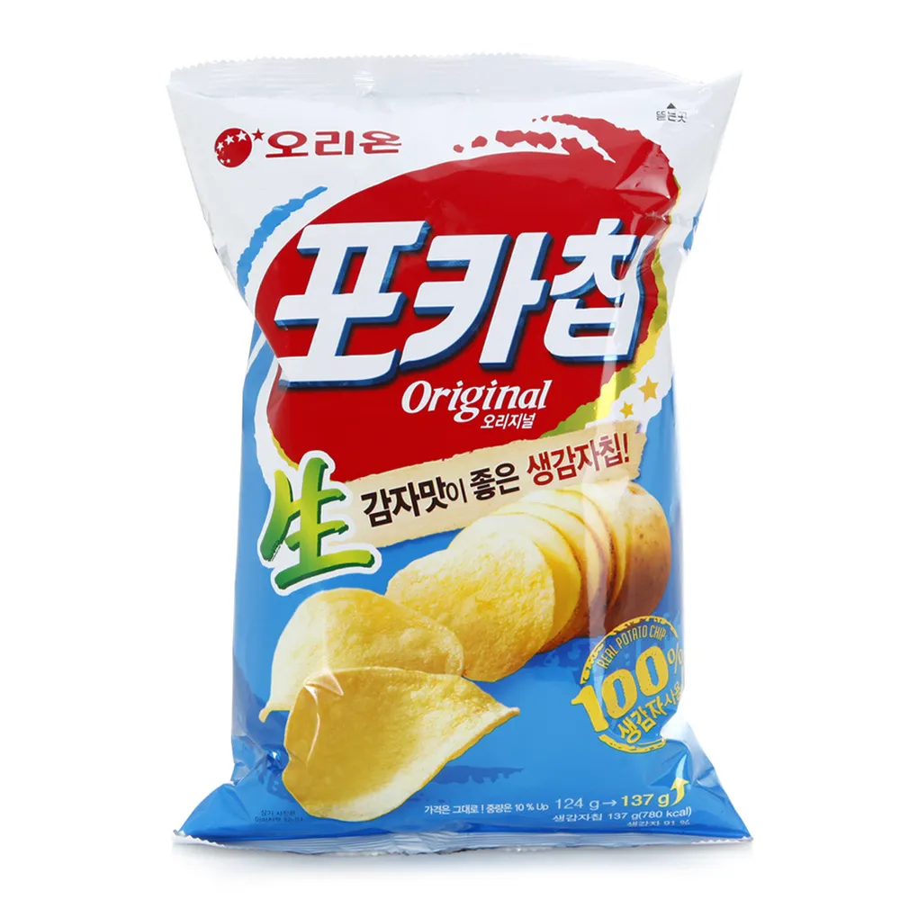

포카칩
오리온의 감자칩이다. 오리온 최고스낵 중 하나로 포함되어 있다. 감자칩 종류는 포테토칩밖에 없었던 1988년 7월에 포카칩 어니언맛으로 한국 과자 시장에 혜성처럼 등장했다. 특이하게도 그냥 짭짤한 맛의 농심 포테토칩과는 달리 애초부터 양파맛이라는 틈새시장을 꿰고 들어가 성공을 거둔 케이스다.
한국에서 감자칩 관련 상품 중 포카칩만 한 인기를 누리고 있는 제품은 없다고 보면 된다. 양이 적고 가격이 비싸지만, 술안주감으로 인기가 많다. 잠시 허니버터칩이 아성을 흔들었지만 포카칩의 꾸준함을 넘지는 못했다.